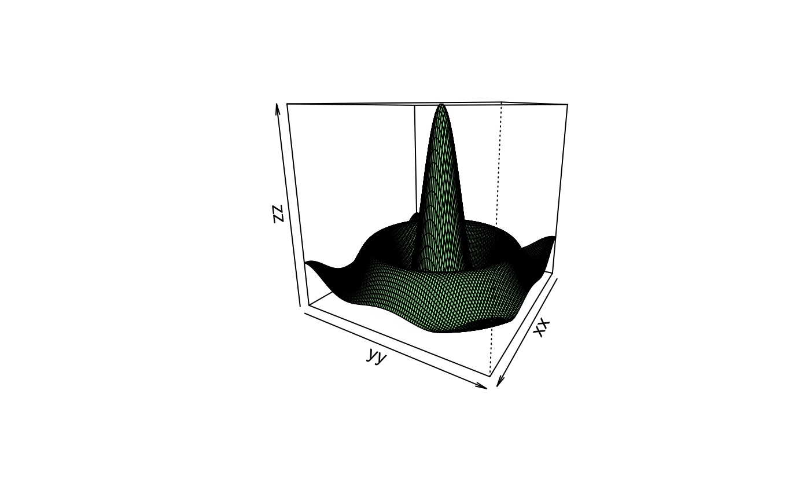
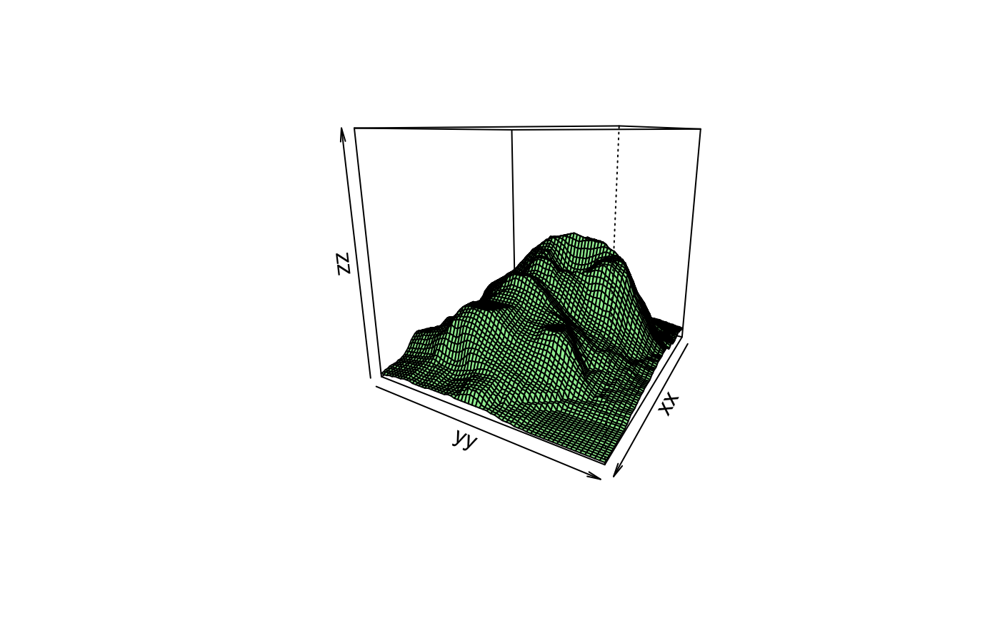

r2stl takes numeric input exactly as with the persp
function. The output is a STL (stereolithography) file.
r2stl(
x,
y,
z,
filename = "3d-R-object.stl",
object.name = "r2stl-object",
z.expand = FALSE,
min.height = 0.008,
show.persp = FALSE,
strict.stl = FALSE
)A numeric vector with the x-coordinates to plot.
A numeric vector with the y-coordinates to plot.
A numeric length(x) by length(y) matrix with the z-coordinates
to plot.
The STL filename.
The object that is being described must have a name specified inside the file. There's probably no point changing it from the default.
To force the 3D plot to touch all six faces of the imaginary
cube that surrounds it, set this argument to TRUE.
The minimum height for the printed material.
If set to TRUE then a persp plot of
this object is shown on the screen.
If set to TRUE it makes files smaller but isn't
strictly proper STL format.
The object returned when close is used to close the
connection to filename.
To view and test the STL files before printing them can be done with many programs, for example an open-source option is Meshlab https://www.meshlab.net/.
# Let's do the classic persp() demo plot
x <- seq(-10, 10, length = 100)
y <- x
f <- function(x,y) {
r <- sqrt(x^2+y^2)
return(10 * sin(r) / r)
}
z <- outer(x, y, f)
z[is.na(z)] <- 1
file1 <- tempfile(fileext = ".stl")
r2stl(x, y, z, filename = file1, show.persp = TRUE)

# Now let's look at R's Volcano data
z <- volcano
x <- 1:dim(volcano)[1]
y <- 1:dim(volcano)[2]
file2 <- tempfile(fileext = ".stl")
r2stl(x, y, z, filename = file2, show.persp = TRUE)
